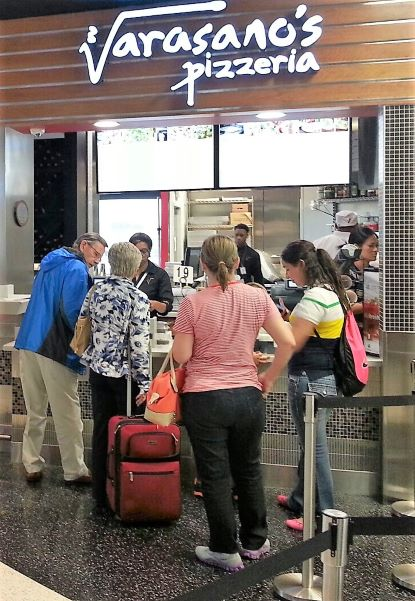
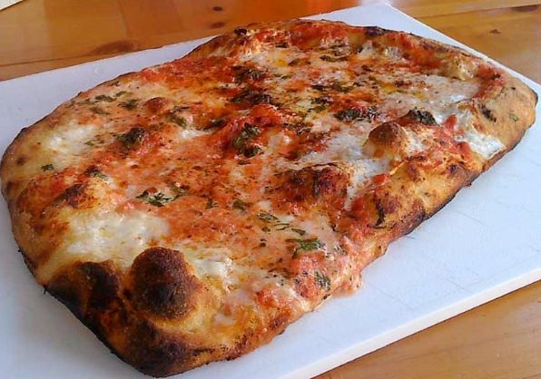

I'm not a fan of typical Southern cuisine (namely fried chicken and grits), but I must admit that I can't wait to try more pizza from the South.
1. Varasano’s Pizzeria - Atlanta, Georgia
 It seems that every time my family and I travel, we always have a layover in the Hartsfield-Jackson Atlanta International Airport. The most recent time we were stuck here, our gate was close to the food court area, and we decided to check it out. Full disclosure: I was insanely hungry when we approached Varsano's but the smell coming out of the pizza ovens was incredible, and the taste of the pizza was even better. The pepperonis had a robust meaty flavor, and the dough had a perfect level of crispiness; the only downside was the slightly burnt crust.
Taste - 5, Dough - 5, Crust - 4